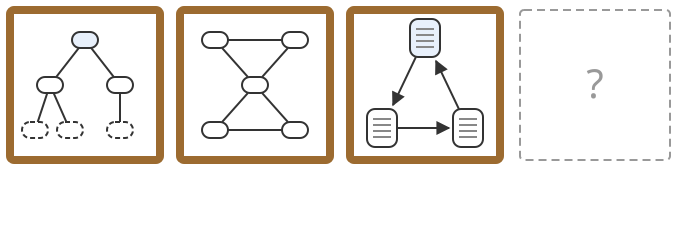

Der Stadtführer der 7b
Mit einem KI-Tutor lernen
Ein KI-Tutor erklärt dir diese Seite und hilft dir bei den Aufgaben. Wähl deinen Assistenten:
Mit Claude öffnen Mit ChatGPT öffnen Mit Mistral Vibe öffnen
Du nutzt dein eigenes Konto beim Anbieter. Der Assistent ist kein Angebot von lernapps.net: lernapps liefert nur Inhalte und Aufgaben. Die Wahl gilt für alle Seiten, nur auf diesem Gerät.
Wo geht es nicht weiter?
Klassenchat 7b
Jona: Hier ist mein Entwurf für unseren Stadtführer.
Mia: Auf einer Seite komme ich nicht mehr weiter. Da steht kein einziger Link!
Frau Berg: Das nennt man eine Sackgasse. Findet ihr sie?
- Sackgasse
Eine Sackgasse ist eine Seite ohne Link. Wer dort ist, kommt mit keinem Klick weiter.
Aufgabe
Lösung
Bücherei richtige Antwort
Ein Pfeil führt zur Bücherei, aber keiner weg. Wer dort ist, kommt mit keinem Link weiter.
Schwimmbad
Vom Schwimmbad führen zwei Pfeile weg, zur Startseite und zum Bus.
Schule
Von der Schule führt ein Pfeil zur Bücherei. Du kommst also weiter.
Als Graph ist eine Sackgasse ein Knoten, von dem kein Pfeil wegführt. Jona braucht einen Link auf der Seite Bücherei, zum Beispiel zur Startseite.
Baue den Stadtführer
Jetzt baust du den Stadtführer selbst. Auf dieser Seite erstellst du einen Hypertext nach Regeln. Jede Karte ist eine Seite. Wähle bei „Link auf“ eine andere Seite und tippe „Link anlegen“. Daneben oder darunter siehst du deinen Hypertext als Graph. Mit „Vorschau“ klickst du ihn durch wie später die Fünfer.
Aufgabe
Aufgabe Nr. 1
Aufgabe Nr. 1
Lege Links an, sodass diese Regeln gelten:
- Klicks von der Startseite bis zu jeder Seite: höchstens 1
- Jede andere Seite hat einen Link zurück zur Startseite.
- Die Seite Schwimmbad hat einen Link zur Seite Bus.
Lösung
Eine mögliche Lösung: Startseite → Schule, Startseite → Bus, Startseite → Schwimmbad, Startseite → Bücherei, Schule → Startseite, Bus → Startseite, Schwimmbad → Startseite, Bücherei → Startseite, Schwimmbad → Bus
Lösung
Eine mögliche Lösung: Startseite → Schule, Startseite → Bus, Startseite → Schwimmbad, Startseite → Bücherei, Schule → Startseite, Bus → Startseite, Schwimmbad → Startseite, Bücherei → Startseite, Schwimmbad → Bus
Eine mögliche Lösung: Startseite → Bücherei, Bücherei → Bus, Startseite → Schule, Schule → Schwimmbad, Schule → Startseite, Bus → Startseite, Schwimmbad → Startseite, Bücherei → Startseite
Eine mögliche Lösung: Startseite → Bus, Bus → Schwimmbad, Startseite → Schule, Schule → Bücherei, Schule → Startseite, Bus → Startseite, Schwimmbad → Startseite, Bücherei → Startseite
Eine mögliche Lösung: Startseite → Bücherei, Bücherei → Schwimmbad, Startseite → Schule, Schule → Bus, Schule → Startseite, Bus → Startseite, Schwimmbad → Startseite, Bücherei → Startseite
Eine mögliche Lösung: Startseite → Schule, Schule → Bücherei, Startseite → Bus, Bus → Schwimmbad, Schule → Startseite, Bus → Startseite, Schwimmbad → Startseite, Bücherei → Startseite
Eine mögliche Lösung: Startseite → Schule, Schule → Schwimmbad, Startseite → Bus, Bus → Bücherei, Schule → Startseite, Bus → Startseite, Schwimmbad → Startseite, Bücherei → Startseite
Eine mögliche Lösung: Startseite → Bücherei, Bücherei → Schule, Startseite → Bus, Bus → Schwimmbad, Schule → Startseite, Bus → Startseite, Schwimmbad → Startseite, Bücherei → Startseite
Eine mögliche Lösung: Startseite → Schwimmbad, Schwimmbad → Schule, Startseite → Bus, Bus → Bücherei, Schule → Startseite, Bus → Startseite, Schwimmbad → Startseite, Bücherei → Startseite
Eine mögliche Lösung: Startseite → Schwimmbad, Schwimmbad → Bücherei, Startseite → Schule, Schule → Bus, Schule → Startseite, Bus → Startseite, Schwimmbad → Startseite, Bücherei → Startseite
Eine mögliche Lösung: Startseite → Schule, Schule → Bus, Startseite → Schwimmbad, Schwimmbad → Bücherei, Schule → Startseite, Bus → Startseite, Schwimmbad → Startseite, Bücherei → Startseite
Eine mögliche Lösung: Startseite → Schule, Startseite → Bus, Startseite → Schwimmbad, Startseite → Bücherei, Schule → Startseite, Bus → Startseite, Schwimmbad → Startseite, Bücherei → Startseite, Schwimmbad → Bücherei
Eine mögliche Lösung: Startseite → Schule, Startseite → Bus, Startseite → Schwimmbad, Startseite → Bücherei, Schule → Startseite, Bus → Startseite, Schwimmbad → Startseite, Bücherei → Startseite, Schule → Schwimmbad
Eine mögliche Lösung: Startseite → Schule, Startseite → Bus, Startseite → Schwimmbad, Startseite → Bücherei, Schule → Startseite, Bus → Startseite, Schwimmbad → Startseite, Bücherei → Startseite, Bücherei → Schule
Eine mögliche Lösung: Startseite → Schule, Startseite → Bus, Startseite → Schwimmbad, Startseite → Bücherei, Schule → Startseite, Bus → Startseite, Schwimmbad → Startseite, Bücherei → Startseite, Bücherei → Bus
Eine mögliche Lösung: Startseite → Bus, Bus → Bücherei, Startseite → Schule, Schule → Schwimmbad, Schule → Startseite, Bus → Startseite, Schwimmbad → Startseite, Bücherei → Startseite
Eine mögliche Lösung: Startseite → Schule, Startseite → Bus, Startseite → Schwimmbad, Startseite → Bücherei, Schule → Startseite, Bus → Startseite, Schwimmbad → Startseite, Bücherei → Startseite, Bus → Schwimmbad
Eine mögliche Lösung: Startseite → Bus, Bus → Schule, Startseite → Schwimmbad, Schwimmbad → Bücherei, Schule → Startseite, Bus → Startseite, Schwimmbad → Startseite, Bücherei → Startseite
Eine mögliche Lösung: Startseite → Schule, Startseite → Bus, Startseite → Schwimmbad, Startseite → Bücherei, Schule → Startseite, Bus → Startseite, Schwimmbad → Startseite, Bücherei → Startseite, Bus → Bücherei
Eine mögliche Lösung: Startseite → Schule, Startseite → Bus, Startseite → Schwimmbad, Startseite → Bücherei, Schule → Startseite, Bus → Startseite, Schwimmbad → Startseite, Bücherei → Startseite, Bus → Schule
Eine mögliche Lösung: Startseite → Schule, Startseite → Bus, Startseite → Schwimmbad, Startseite → Bücherei, Schule → Startseite, Bus → Startseite, Schwimmbad → Startseite, Bücherei → Startseite, Schwimmbad → Schule
Eine mögliche Lösung: Startseite → Schule, Startseite → Bus, Startseite → Schwimmbad, Startseite → Bücherei, Schule → Startseite, Bus → Startseite, Schwimmbad → Startseite, Bücherei → Startseite, Schule → Bus
Eine mögliche Lösung: Startseite → Schwimmbad, Schwimmbad → Bus, Startseite → Schule, Schule → Bücherei, Schule → Startseite, Bus → Startseite, Schwimmbad → Startseite, Bücherei → Startseite
Eine mögliche Lösung: Startseite → Schule, Startseite → Bus, Startseite → Schwimmbad, Startseite → Bücherei, Schule → Startseite, Bus → Startseite, Schwimmbad → Startseite, Bücherei → Startseite, Schule → Bücherei
Eine mögliche Lösung: Startseite → Schule, Startseite → Bus, Startseite → Schwimmbad, Startseite → Bücherei, Schule → Startseite, Bus → Startseite, Schwimmbad → Startseite, Bücherei → Startseite, Bücherei → Schwimmbad
Aufgabe
Lösung
„Busplan“ richtige Antwort
Der Linktext sagt, was auf der Zielseite steht. So wissen die Fünfer vor dem Klick, wohin er führt.
„hier klicken“
Das sagt nur, dass man klicken kann, aber nicht, wohin der Link führt.
„Link“
Dass es ein Link ist, sieht man schon an der blauen, unterstrichenen Schrift. Wohin er führt, sagt das Wort nicht.
Ein guter Linktext nennt das Ziel des Links. Wer nur die Linktexte liest, findet trotzdem den Weg.
Ein fremdes Bild im Stadtführer
Klassenchat 7b
Selin: Für die Seite Schwimmbad habe ich ein Foto im Netz gefunden, auf example.org/freibad: „Freibad am Morgen“ von Kim Sander, mit der Lizenz CC BY 4.0.
Frau Berg: Dann gehört eine Quellenangabe unter das Bild.
Fremde Bilder und Texte darfst du nur mit Erlaubnis oder freier Lizenz nutzen, und immer mit Quellenangabe. Sie hat vier Teile: Titel, Urheber, Quelle (die Seite, auf der das Bild steht) und Lizenz.
Aufgabe
Lösung
„Freibad am Morgen“, Kim Sander, example.org/freibad, CC BY 4.0 richtige Antwort
Titel, Urheber, Quelle und Lizenz sind alle da.
Foto: aus dem Internet
Es fehlen Titel, Urheber und Lizenz. „Internet“ sagt nicht, auf welcher Seite das Foto steht.
„Freibad am Morgen“, Kim Sander
Titel und Urheber stimmen, aber Quelle und Lizenz fehlen.
Eine vollständige Quellenangabe hat vier Teile: Titel, Urheber, Quelle und Lizenz. Im Netz verlinkst du die Lizenz am besten.
Aufgabe
Lösung
Richtige Antwort: Titel – Freibad am Morgen; Urheber – Kim Sander; Quelle – example.org/freibad; Lizenz – CC BY 4.0
„Schwimmbad“ ist die Seite des Stadtführers, auf der das Bild steht, nicht die Quelle. Die Quelle ist die Seite im Netz, von der das Bild kommt.
Die Galerie wächst weiter

© CC-BY-4.0Die Galerie der Datenstrukturen. Neu ist der Hypertext im dritten Rahmen.
| Struktur | So findest du ein Element |
|---|---|
| Baum | Von der Wurzel aus nach unten: Es gibt genau einen Weg. |
| Graph | Von einem Knoten aus den Kanten folgen und merken, wo du schon warst, sonst läufst du im Kreis. Nimm den Weg mit den wenigsten Kanten. |
| Hypertext | Bei der Startseite beginnen und den Links in ihrer Richtung folgen. |
Rückblick auf das Kapitel: Du hast aus dem Baum einen Graphen gemacht, Kanten Richtungen gegeben und einen Stadtführer als Hypertext gebaut. Der vierte Rahmen bleibt noch leer. Später kommt dort eine Reihe von Fächern hinein, in der jedes Element eine Nummer hat.
Fehler gefunden oder eine Idee für diese App?